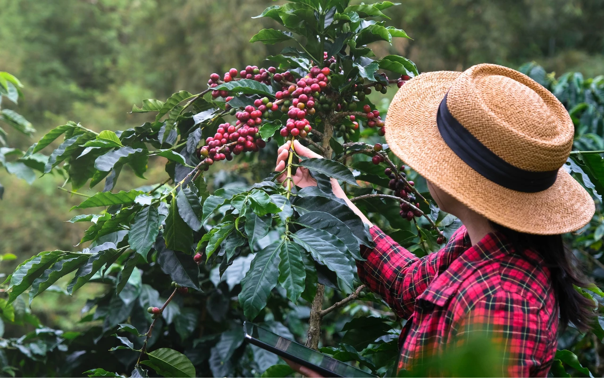
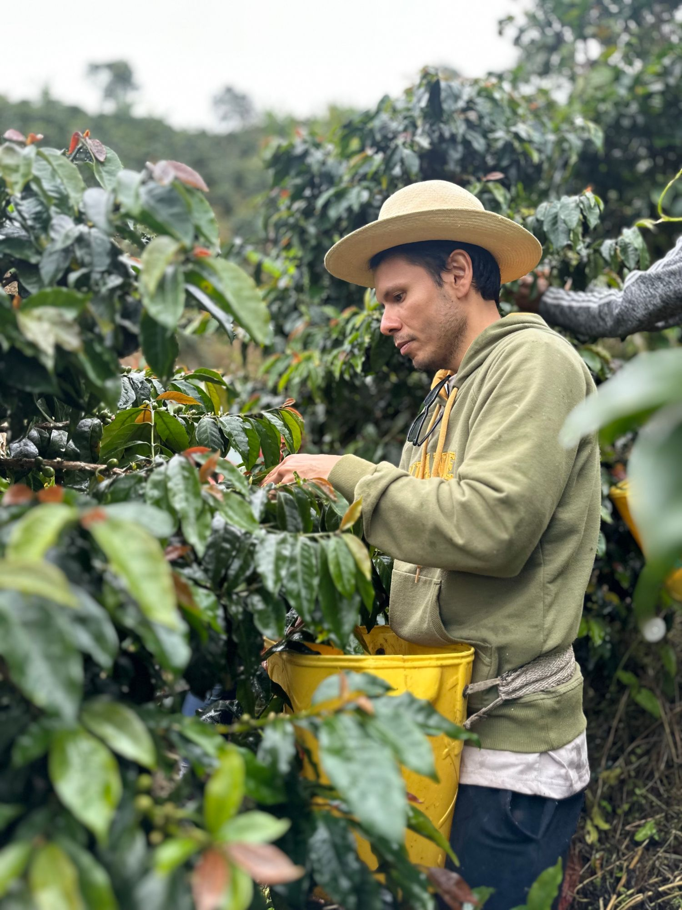
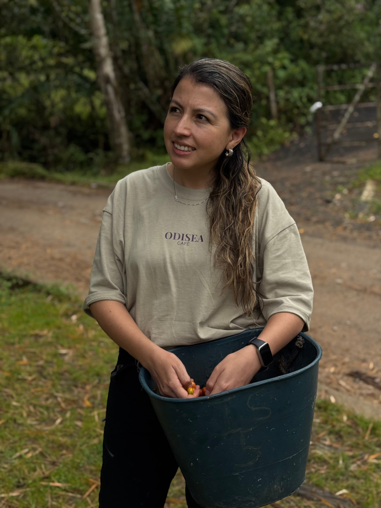

Portal del productor
La plata de tu café, clara en el celular
Entra con tu celular o tu correo, el que tengas más a la mano. Registra tu finca, anota tu cosecha y mira cuánto te queda: lo del café y lo de la casa.
Así no haya señal, lo que anotas queda guardado en tu celular.

Tu finca, en tu celular
Lo que nos contaron en el campo
Antes y ahora
Antes
- — Las cuentas las llevaba en la cabeza, cuando mucho.
- — Si no había señal, tocaba esperar para anotar algo.
- — Las apps pedían correo, y uno no siempre tiene.
- — Al final del mes nunca sabía bien qué le había quedado.
Con Mi Finca Odisea
- ✓ Anotas la venta o el gasto apenas pasa.
- ✓ No importa si hay señal: se guarda y sincroniza después.
- ✓ Entras con tu celular o tu correo, como prefieras.
- ✓ Ves clarito cuánto te quedó, del café y de la casa.
Cómo funciona
Paso a paso, a tu ritmo
Te registras
Con tu celular o tu correo, lo que tengas más a la mano, y una contraseña.
Marcas tu finca
Te paras en tu lote para capturar la ubicación. Funciona sin señal.
Anotas tu cosecha
De cereza a seco a verde, vas registrando cada etapa cuando puedes.
Llevas tus cuentas
Lo del café y lo de la casa, cada cosa por su lado.
Revisas cómo vas
Entras cuando quieras y ves tu plata: lo que entró, lo que salió y lo que te queda.

Lo que más ha llamado la atención y te puede interesar
Dos bolsillos, una sola verdad
El café y la casa casi siempre salen del mismo bolsillo, pero son cuentas distintas. Aquí las separas tú, y si quieres, ves el total junto. Así sabes, por primera vez, cuánto te queda de verdad.
Ganancia del café
$1.700.000
Empieza hoy
Cuando quieras, empezamos
Registrarte no toma ni un minuto. Necesitas tu celular o tu correo, nada más.
¿Prefieres que te ayudemos a entrar?
+57 301 530 3014
